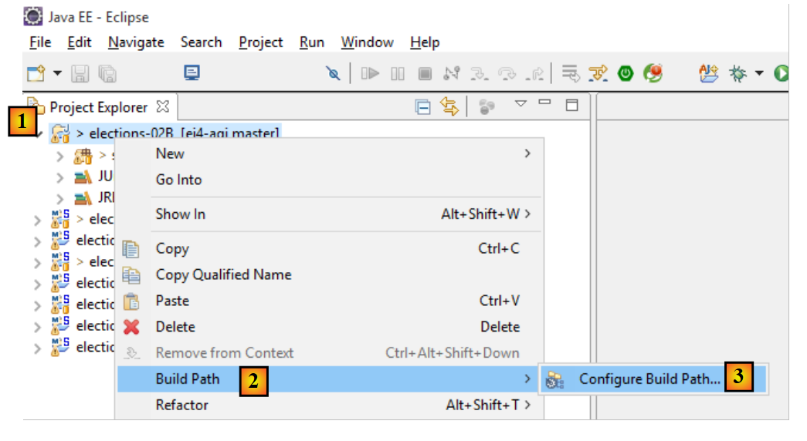
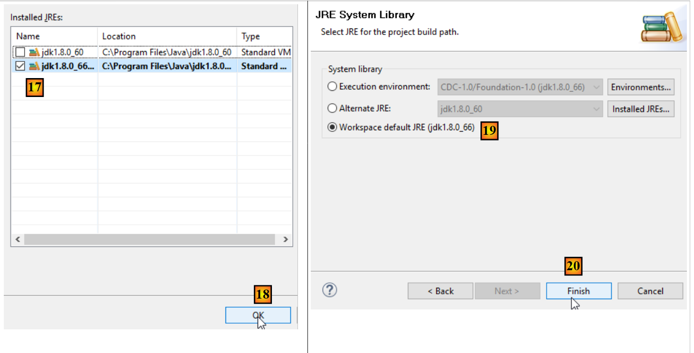
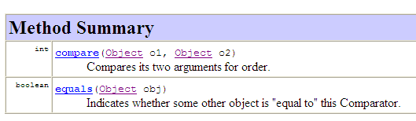

3. [TD]: Klassen
Sleutelwoorden: klasse, interface, overerving, uitzondering, polymorfisme
Aanbevolen lectuur:
- paragrafen 2.1, 2.2, 2.4 en 2.7 van hoofdstuk 2 van [ref1]: Klassen en interfaces
- paragrafen 3.3 (klasse String), 3.5 (klasse ArrayList), 3.6 (klasse Arrays)
In deel 1 van de oefening ELECTIONS is geen enkele klasse gebruikt. We hebben een oplossing gebouwd zoals we die in de programmeertaal C zouden hebben gebouwd. We introduceren nu het begrip Java-klasse.
3.1. Support
 |  |
De map [support / chap-03] bevat het Eclipse-project van dit hoofdstuk.
We gaan voortaan werken met JDK 1.8, omdat sommige van de volgende projecten deze versie vereisen. Om te weten welke versie wordt gebruikt, gaat u als volgt te werk:
 |
 |
- in [4], de gebruikte JRE (Java Runtime Environment). Deze JRE is hier in feite een JDK (Java Development Kit), hier [jdk1.8.0_60]. Als het geen JDK is of als u een versie lager dan 1.8 hebt, ga dan als volgt te werk: [5-21];
 |
- naar [8], de JRE die momenteel standaard door Eclipse wordt gebruikt;
- in [11], de verschillende JDK en JRE die momenteel bij Eclipse bekend zijn;
 |
- in [15], kies dan een JDK in plaats van een JRE. Dit document maakt gebruik van Maven-projecten die een JDK nodig hebben;
 |
 |
- in [21] hebben we een JDK met versie >=1.8;
- in [22-23], ga je naar de facetten (verschillende weergaven van hetzelfde Eclipse-project) van het project;
 |
- in [24], controleer of u een Java-versie >=1.8 gebruikt;
3.2. De klas [ListeElectorale]
In de programmeertaal C zouden we waarschijnlijk een structuur hebben gebruikt om een lijst met verkiezingsdeelnemers weer te geven. Die zou er als volgt uit kunnen zien:
Het begrip 'structuur' bestaat niet in de programmeertaal Java. Het moet worden vervangen door het begrip 'klasse'. We besluiten daarom een klasse aan te maken om de informatie over een kandidatenlijst op te slaan. Deze zou de volgende opbouw hebben:
package istia.st.elections;
public class ListeElectorale {
/**
* identité de la liste
*/
private int id;
/**
* nom de la liste
*/
private String nom;
/**
* nombre de voix de la liste
*/
private int voix;
/**
* nombre de sièges de la liste
*/
private int sieges;
/**
* indique si la liste est éliminée ou non
*/
private boolean elimine;
/**
* constructeur par défaut
*/
public ListeElectorale() {
}
/**
*
* @param nom String : le nom de la liste
* @param voix int : son nombre de voix
* @param sieges int : son nombre de sieges
* @param elimine boolean : son état éliminé ou non
*/
public ListeElectorale(int id,String nom, int voix, int sieges, boolean elimine) {
...
}
/**
*
* @return int : l'identifiant de la liste
*/
public int getId() {
...
}
/**
* initialise l'identifiant de liste
* @param id int : identifiant de la liste
* @throws ElectionsException si id<1
*/
public void setId(int id) {
...
}
/**
*
* @return String : le nom de la liste
*/
public String getNom() {
...
}
/**
* initialise le nom de la liste
* @param nom String : nom de la liste
* @throws ElectionsException si le nom est vide ou blanc
*/
public void setNom(String nom) {
...
}
/**
*
* @return int : le nombre de voix de la liste
*/
public int getVoix() {
...
}
/**
* initialise le nombre de voix de la liste
* @param voix int : le nombre de voix de la liste
*/
public void setVoix(int voix) {
...
}
/**
*
* @return int : le nombre de sièges de la liste
*/
public int getSieges() {
...
}
/**
* fixe le nombre de sièges de la liste
* @param sieges int : le nombre de sièges de la liste
*/
public void setSieges(int sieges) {
...
}
/**
*
* @return boolean : valeur du champ elimine
*/
public boolean isElimine() {
...
}
/**
*
* @param sieges int
*/
public void setElimine(boolean elimine) {
...
}
/**
*
* @return String : identité de la liste électorale
*/
public String toString() {
...
}
}
- regel 8: een uniek identificatienummer voor een lijst. Dit is hier niet noodzakelijk, maar is bedoeld voor toekomstig gebruik.
- regel 13: de naam van de lijst.
- regel 17: het aantal stemmen van de lijst
- regel 21: het aantal zetels van de lijst
- regel 25: booleaanse waarde die aangeeft of de lijst is uitgesloten (percentage behaalde stemmen onder de kiesdrempel) of niet.
Elk privéveld met de naam [xyz] kan worden geïnitialiseerd met een methode genaamd [setXyz]. Met de methode [getXyz] kan de waarde van het privéveld [xyz] worden opgehaald. In het specifieke geval waarin [xyz] een veld van het type booleaanse waarde is, kan de methode [getXyz] worden vervangen door de methode [isXyz]. De specifieke naamgeving van deze methoden volgt een coderingsstandaard die de JavaBean-standaard wordt genoemd. Daarom definiëren we de volgende openbare methoden:
- getId (regel 48), setId (regel 57)
- getNom (regel 65), setNom (regel 74)
- getVoix (regel 82), setVoix (regel 90)
- getSieges (regel 98), setSieges (regel 106)
- isElimine (regel 114), setElimine (regel 122)
- regels 30-31: definiëren een constructor zonder parameters. Hiermee kan een object [ListeElectorale] worden aangemaakt zonder het te initialiseren. Dit object kan vervolgens worden geïnitialiseerd met behulp van de set-methoden.
- regels 40-42: definiëren een constructor waarmee een [ListeElectorale]-object kan worden aangemaakt en tegelijkertijd de vijf privévelden ervan worden geïnitialiseerd.
- regels 130-132: definiëren de methode [toString] die een tekenreeks retourneert met de waarden van de vijf velden van het object.
Een testprogramma voor de klasse ListeElectorale zou er als volgt uit kunnen zien:
package istia.st.elections.tests;
import istia.st.elections.ListeElectorale;
public class MainTest1ListeElectorale {
public static void main(String[] args) {
// opstellen van een kieslijst
ListeElectorale listeElectorale1 = new ListeElectorale(1, "A", 32000,
0, false);
// weergave van de identiteit van de lijst
System.out.println("listeElectorale1=" + listeElectorale1);
// het aantal zetels wijzigen
listeElectorale1.setSieges(2);
// weergave identiteit lijst 1
System.out.println("listeElectorale1=" + listeElectorale1);
// een nieuwe kieslijst
ListeElectorale listeElectorale2 = listeElectorale1;
// weergave identiteit lijst 2
System.out.println("listeElectorale2=" + listeElectorale2);
// wijziging van het aantal zetels
listeElectorale2.setSieges(3);
// identiteitsweergave van beide lijsten
System.out.println("listeElectorale2=" + listeElectorale2);
System.out.println("listeElectorale1=" + listeElectorale1);
}
}
De Eclipse-omgeving voor deze test zou er als volgt uit kunnen zien:
 |
- [1]: het project heet [elections-02A]
- [2]: de applicatie wordt in een pakket geplaatst, in dit geval [istia.st.elections]
- [3]: [ListeElectorale.java] is de broncode van de klasse [ListeElectorale]
- [4]: de testklassen worden in een pakket geplaatst, in dit geval [istia.st.elections.tests]
- [5]: de testklasse [MainTest1ListeElectorale]
De schermweergave na uitvoering van het bovenstaande programma is als volgt:

Opdracht: vul, aan de hand van het bovenstaande, de code van de klasse ListeElectorale aan.
3.3. Aanmaken van een uitzonderingsklasse [ElectionsException]
Onder de verschillende uitzonderingsklassen van de Java-taal bevindt zich er een met de naam [RuntimeException]. Deze klasse is afgeleid van de klasse [Exception], de basis van alle uitzonderingsklassen. Het bijzondere aan instanties van [RuntimeException] of daarvan afgeleide instanties is dat men ze niet hoeft te declareren of te beheren. Men noemt ze ongecontroleerde uitzonderingen.
Laten we een eerste voorbeeld nemen. De klasse [BufferedReader] is een klasse waarvan de instanties het mogelijk maken om tekstregels uit een gegevensstroom te lezen. Deze klasse beschikt over een methode [readLine] met de volgende signatuur:
We zien dat de methode een uitzondering van het type [IOException] kan genereren. De structuur van deze klasse is als volgt:
De klasse [IOException] is afgeleid van de klasse [Exception] (regel 3). De compiler dwingt ons om uitzonderingen van het type [java.lang.Exception] of daarvan afgeleide typen af te handelen en te declareren (behalve voor de tak [RuntimeException], die we later zullen bespreken). Om een tekstregel in te lezen die via het toetsenbord is ingevoerd, moeten we dus iets schrijven als:
Laten we nog een voorbeeld nemen. Om een tekenreeks om te zetten in een geheel getal kun je de statische methode [Integer.parseInt] gebruiken, waarvan de signatuur als volgt is:
Het argument [s] is de tekenreeks die in een geheel getal moet worden omgezet. We zien dat de methode een uitzondering van het type [NumberFormatException] kan genereren. De structuur van deze klasse is als volgt:
De klasse [NumberFormatException] is afgeleid van de klasse [RuntimeException] (regel 4). De compiler dwingt ons niet om uitzonderingen van het type [java.lang.RuntimeException] of daarvan afgeleide typen te beheren en te declareren. We kunnen dus iets schrijven als:
We hoeven geen [try - catch]-clausule op te nemen om de eventuele uitzondering af te handelen die door [Integer.parseInt] (regel 9) wordt gegenereerd.
Het aanmaken en gebruiken van uitzonderingsklassen die zijn afgeleid van [RuntimeException] heeft voor- en nadelen:
- wat de voordelen betreft: de code is lichter
- wat de nadelen betreft: men kan terugvallen op C-methoden waarbij elke functie een foutcode retourneert die maar weinig mensen gebruiken, juist om de code lichter te houden. Wanneer zich een dergelijke onbehandelde fout voordoet, crasht het programma, meestal op een weinig elegante manier.
We besluiten een speciale klasse aan te maken waarin alle uitzonderingen worden gebundeld die in onze applicatie ELECTIONS kunnen optreden. Deze krijgt de naam [ElectionsException] en is afgeleid van de klasse [RuntimeException]. De code ervan is als volgt:
package istia.st.elections;
public class ElectionsException extends RuntimeException {
private static final long serialVersionUID = 1L;
public ElectionsException() {
super();
}
public ElectionsException(String message) {
super(message);
}
public ElectionsException(Throwable cause) {
super(cause);
}
public ElectionsException(String message, Throwable cause) {
super(message, cause);
}
}
- regel 1: we plaatsen de klasse in het pakket [istia.st.elections];
- regel 3: de klasse is afgeleid van [RuntimeException]. Ze is dus niet gecontroleerd;
- regel 4: een serialisatie-ID die we voorlopig kunnen negeren;
- we zullen in onze applicatie twee soorten constructors gebruiken:
- de klassieke constructor van de regels 15-17, zoals hieronder:
In dit geval kan de methode die een methode aanroept die een dergelijke uitzondering genereert, deze als volgt afhandelen:
// uitzondering testen
try {
listeElectorale2.setSieges(-3);
} catch (ElectionsException ex) {
System.err.println("L'exception suivante s'est produite : ["
+ ex.toString() + "]");
}
- (vervolg)
- of die van de regels 14-20, bedoeld om een reeds opgetreden uitzondering door te geven door deze in te kapselen in een uitzondering van het type [ElectionsException]:
try {
...;
} catch (SQLException ex) {
// de uitzondering wordt ingekapseld
throw new ElectionsException("erreur de fermeture de la connexion à la BD",ex);
}
Deze tweede methode heeft het voordeel dat de informatie die de eerste uitzondering kan bevatten, behouden blijft. In dit geval kan de methode die een methode aanroept die een dergelijke uitzondering genereert, deze als volgt afhandelen:
try {
...;
} catch (ElectionsException ex) {
System.out.println(ex.getMessage() + ", Cause : "+ ex.getCause().getMessage());
System.exit(1);
}
Te doen: pas de code van de klasse ListeElectorale zodanig aan dat de set-methoden een uitzondering van het type [ElectionsException] genereren als de gevraagde initialisatie onjuist is, zoals bijvoorbeeld het initialiseren van de naam met een lege tekenreeks.
Het Eclipse-testproject voor deze nieuwe versie zou er als volgt uit kunnen zien:
 |
- [1]: het project heet [elections-02B]
- [2]: de applicatie is ondergebracht in een pakket, in dit geval [istia.st.elections]
- [3]: de klassen [ListeElectorale] en [ElectionsException]
- [4]: de testklassen zijn ondergebracht in een pakket, in dit geval [istia.st.elections.tests]
- [5]: de testklasse [MainTest1ListeElectorale]
De reeds besproken testklasse [MainTest1ListeElectorale] is licht aangepast om uitzonderingsgevallen te testen:
package istia.st.elections.tests;
import istia.st.elections.ElectionsException;
import istia.st.elections.ListeElectorale;
public class MainTest1ListeElectorale {
public static void main(String[] args) {
// opstellen van een kieslijst
ListeElectorale listeElectorale1 = new ListeElectorale(1, "A", 32000,
0, false);
// identiteit van de lijst weergeven
System.out.println("listeElectorale1=" + listeElectorale1);
// aantal zetels wijzigen
listeElectorale1.setSieges(2);
// identiteit van lijst 1 weergeven
System.out.println("listeElectorale1=" + listeElectorale1);
// een nieuwe kieslijst
ListeElectorale listeElectorale2 = listeElectorale1;
// weergave identiteit lijst 2
System.out.println("listeElectorale2=" + listeElectorale2);
// wijziging van het aantal zetels
listeElectorale2.setSieges(3);
// weergave van de identiteit van de 2 lijsten
System.out.println("listeElectorale2=" + listeElectorale2);
System.out.println("listeElectorale1=" + listeElectorale1);
// uitzonderingstest
try {
listeElectorale2.setSieges(-3);
} catch (ElectionsException ex) {
System.err.println("L'exception suivante s'est produite : ["
+ ex.toString() + "]");
}
}
}
- regel 28: er wordt geprobeerd het aantal zitplaatsen te initialiseren met een ongeldige waarde
- regel 30: als er een uitzondering optreedt, wordt deze weergegeven
De uitvoering van de test levert de volgende resultaten op:

We zien dat de klasse [ListeElectorale] inderdaad een uitzondering heeft gegenereerd toen we het aantal zitplaatsen wilden initialiseren met een ongeldige waarde (regel 28 van de code).
3.4. Een unit-testklasse
Het vorige type test is gebaseerd op een visuele controle. Er wordt gecontroleerd of op het scherm wordt weergegeven wat verwacht wordt. Deze methode wordt in een professionele omgeving afgeraden. Tests moeten altijd zoveel mogelijk worden geautomatiseerd en ernaar streven dat er geen menselijke tussenkomst nodig is. De mens is namelijk onderhevig aan vermoeidheid en zijn vermogen om tests te controleren neemt in de loop van de dag af.
Een applicatie evolueert in de loop van de tijd. Bij elke wijziging moet worden gecontroleerd of de applicatie geen „regressie” vertoont, c.a.d, en of ze nog steeds de functionele tests doorstaat die bij de oorspronkelijke ontwikkeling waren uitgevoerd. Deze tests worden „non-regressietests” genoemd. Een applicatie van enige omvang kan honderden tests vereisen. Elke methode van elke klasse in de applicatie wordt namelijk getest. Dit worden unit-tests genoemd. Deze kunnen veel ontwikkelaars in beslag nemen als ze niet zijn geautomatiseerd.
Er zijn tools ontwikkeld om de tests te automatiseren. Een daarvan heet [JUnit]. Dit is een bibliotheek met klassen die bedoeld zijn om de tests te beheren. We gaan deze tool gebruiken om de klasse [ListeElectorale] te testen.
Een testprogramma JUnit (versies 4.x) ziet er als volgt uit:
package istia.st.elections.tests;
import org.junit.Assert;
import org.junit.After;
import org.junit.Before;
import org.junit.Test;
public class JUnitEssai {
@Before
public void avant() throws Exception {
System.out.println("tearUp");
}
@After
public void après() throws Exception {
System.out.println("tearDown");
}
@Test
public void t1() {
System.out.println("test1");
Assert.assertEquals(1, 1);
}
@Test
public void t2() {
System.out.println("test2");
Assert.assertEquals(1, 2);
}
}
- regel 1: de klasse is ondergebracht in het pakket [istia.st.elections.tests];
- regel 11: de methode die is geannoteerd met de annotatie [@Before] wordt vóór elke unit-test uitgevoerd;
- regel 16: de methode die is geannoteerd met de annotatie [@After] wordt na elke unit-test uitgevoerd;
- regel 21: een methode die is geannoteerd met de annotatie [@Test] is een methode die door de unit-test wordt getest. De methoden die zijn geannoteerd met [@Test] worden achtereenvolgens uitgevoerd, tenzij de tester anders aangeeft; deze kan zelf de te testen methoden selecteren. Vóór elke uitvoering van een methode [@Test] wordt de methode [@Before] uitgevoerd. Na elke uitvoering van een methode [@Test] wordt de methode [@After] uitgevoerd;
- regels 22-25: definiëren een testmethode [t1];
- regel 18: een van de methoden [Assert.assert*] waarmee beweringen kunnen worden gecontroleerd. Er zijn de volgende methoden [assert]:
- assertEquals(uitdrukking1, uitdrukking2): controleert of de waarden van beide uitdrukkingen gelijk zijn. Er worden veel soorten uitdrukkingen geaccepteerd (int, String, float, double, boolean, char, short). Als de twee uitdrukkingen niet gelijk zijn, wordt er een uitzondering van het type [AssertionFailedError ] gegenereerd,
- assertEquals(reëel1, reëel2, delta): controleert of twee reële getallen op delta na gelijk zijn, c.a.d abs(reëel1-reëel2) <= delta. Men kan bijvoorbeeld assertEquals(reëel1, reëel2, 1E-6) schrijven om te controleren of twee waarden gelijk zijn tot op 10⁻⁶ nauwkeurig,
- assertEquals(message, expression1, expression2) en assertEquals(message, réel1, réel2, delta) zijn varianten waarmee de foutmelding kan worden gespecificeerd die moet worden gekoppeld aan de uitzondering van het type [AssertionFailedError] die wordt gegenereerd wanneer de methode [assertEquals] mislukt,
- assertNotNull(Object) en assertNotNull(message, Object): controleert of Object niet gelijk is aan null,
- assertNull(Object) en assertNull(message, Object): controleert of Object gelijk is aan null,
- assertSame(Object1, Object2) en assertSame(message, Object1, Object2): controleert of de verwijzingen Object1 en Object2 naar hetzelfde object verwijzen,
- assertNotSame(Object1, Object2) en assertNotSame(message, Object1, Object2): controleert of de verwijzingen Object1 en Object2 niet naar hetzelfde object verwijzen;
- regel 24: deze bewering moet slagen;
- regel 30: deze assertie moet mislukken;
In de Eclipse-omgeving kan een testklasse JUnit als volgt worden aangemaakt:
 |
- [1]: klik met de rechtermuisknop op het pakket waaraan je de testklasse wilt toevoegen, en selecteer vervolgens de optie [JUnit / New / JUnit Test Case]
 |
- [1]: een versie selecteren JUnit;
- [2]: de map selecteren waarin de testklasse moet worden aangemaakt;
- [3]: keuze van het pakket waarin de testklasse moet worden aangemaakt;
- [4]: naam van de testklasse;
- [5]: keuze van de methoden die moeten worden opgenomen in de klasse die zal worden gegenereerd;
- [6]: de klasse JUnitEssai is gegenereerd
De vorige wizard genereert een vrijwel lege klasse:
package istia.st.elections.tests;
import org.junit.Assert;
import org.junit.After;
import org.junit.Before;
public class JUnitEssai {
@Before
public void setUp() throws Exception {
}
@After
public void tearDown() throws Exception {
}
}
Laten we de vorige code als volgt aanvullen en aanpassen:
package istia.st.elections.tests;
import org.junit.Assert;
import org.junit.After;
import org.junit.Before;
import org.junit.Test;
public class JUnitEssai2 {
@Before
public void avant() throws Exception {
System.out.println("tearUp");
}
@After
public void après() throws Exception {
System.out.println("tearDown");
}
@Test
public void t1() {
System.out.println("test1");
Assert.assertEquals(1, 1);
}
@Test
public void t2() {
System.out.println("test2");
Assert.assertEquals(1, 2);
}
}
In Eclipse kun je de testklasse uitvoeren door er met de rechtermuisknop op te klikken en vervolgens de optie [Run as / JUnit test] te selecteren:

De resultaten van deze test zijn als volgt:

Hierboven is de methode [test2] mislukt. Telkens wanneer een test mislukt, wordt er een foutmelding aan gekoppeld. Voor [test2] is dat de hierboven weergegeven melding. De melding geeft het regelnummer aan waar de fout is opgetreden (regel 30). Op regel 30 was de mislukte aanroep:
Assert.assertEquals(1, 2);
De eerste parameter wordt de verwachte waarde genoemd, de tweede de werkelijke waarde. De foutmelding van [test2] hierboven geeft aan dat de verwachte waarde 2 was, maar dat de werkelijke waarde 3 was.
Ten slotte waren de berichten die door de verschillende testmethoden op de console werden weergegeven als volgt:

Deze berichten tonen aan dat de methoden [@Before] en [@After] inderdaad respectievelijk vóór en na elke testmethode zijn aangeroepen.
De testklassen worden niet noodzakelijkerwijs door de ontwikkelaars zelf geschreven. Ze kunnen ook worden geschreven door degenen die de specificaties van de applicatie hebben opgesteld. Bepaalde ontwikkelingsmethoden, ook wel TDD (Test Driven Development) genoemd, raden aan om de testklassen te schrijven nog voordat de te testen klassen worden geschreven. Dit maakt het soms mogelijk om specificaties te verduidelijken die anders op verschillende manieren zouden kunnen worden geïnterpreteerd.
Laten we een JUnit 4-test maken, genaamd [JUnitTest1ListeElectorale], voor de klasse [ListeElectorale]. In Eclipse gaan we te werk zoals eerder beschreven:
 |  |
We vullen de door de wizard gegenereerde code als volgt aan:
package istia.st.elections.tests;
import org.junit.Assert;
import istia.st.elections.ElectionsException;
import istia.st.elections.ListeElectorale;
import org.junit.Test;
public class JUnitTest1ListeElectorale {
@Test
public void t1() {
// opstellen kieslijst
ListeElectorale liste = new ListeElectorale(1, "a", 32000, 0, false);
// controles
Assert.assertEquals("a", liste.getNom());
Assert.assertEquals(32000, liste.getVoix());
Assert.assertEquals(false, liste.isElimine());
Assert.assertEquals(0, liste.getSieges());
// controle geldigheid ID
boolean erreur = false;
try {
liste.setId(-4);
} catch (ElectionsException e) {
erreur = true;
}
Assert.assertEquals(true, erreur);
// controle geldigheid naam
erreur = false;
try {
liste.setNom("");
} catch (ElectionsException e) {
erreur = true;
}
Assert.assertEquals(true, erreur);
// controle geldigheid stemmen
erreur = false;
try {
liste.setVoix(-4);
} catch (ElectionsException e) {
erreur = true;
}
Assert.assertEquals(true, erreur);
// controle geldigheid zetels
erreur = false;
try {
liste.setSieges(-4);
} catch (ElectionsException e) {
erreur = true;
}
Assert.assertEquals(true, erreur);
}
}
Het uitvoeren van de test levert het volgende resultaat op:

De tests zijn geslaagd. We gaan er nu vanuit dat we een operationele klasse [ListeElectorale] hebben.
3.5. MainElections: versie 2
Aanbevolen lectuur:
- paragrafen 2.1, 2.2, 2.4 en 2.7 van hoofdstuk 2 van [1]: Klassen en interfaces
- paragrafen 3.3 (klasse String), 3.5 (klasse ArrayList), 3.6 (klasse Arrays)
We willen de applicatie [Elections] herschrijven en daarbij de volgende nieuwe beperkingen toevoegen:
- de klasse [ListeElectorale] wordt gebruikt om een kandidatenlijst weer te geven
- de applicatie zal via het toetsenbord de volgende informatie opvragen:
- het aantal te vervullen zetels
- de namen en stemmen van de lijsten. Het is vooraf niet bekend hoeveel lijsten er zijn. De laatste lijst wordt aangeduid met een naam die gelijk is aan de tekenreeks "*".
- Omdat het aantal lijsten vooraf niet bekend is, worden deze eerst opgeslagen in een object van het type [ArrayList]. Zodra alle lijsten zijn ingevoerd, worden ze vervolgens overgebracht naar een lijsttabel.
- De resultaten worden weergegeven in aflopende volgorde van het aantal behaalde zetels.
Om een array T te sorteren, zijn er verschillende statische methoden beschikbaar van de klasse [Arrays]:
- Arrays.sort(T): sorteert de tabel T volgens een natuurlijke volgorde, indien deze bestaat (oplopend voor getallen, datums, alfabetisch voor tekenreeksen, ...)
- Arrays.sort(T,vergelijker): voor het sorteren van tabellen T die geen natuurlijke volgorde hebben. Dit is hier het geval voor de tabel met lijsten die moet worden gesorteerd op basis van een specifiek veld van de lijst: het aantal behaalde zetels.
In de methode Arrays.sort(T,vergelijker) is de parameter ‘vergelijker’ een object dat de volgende Comparator-interface implementeert:

- met de methode `compare` kunnen twee elementen van de array T worden vergeleken
- met de methode equals kan worden vastgesteld of twee objecten gelijk zijn
Beide methoden vergelijken objecten van het type obj1 en obj2. Of obj1<obj2, obj1=obj2 of obj1>obj2 geldt, hangt af van de volgorde die men tussen de twee objecten wil vastleggen. Het is aan de ontwikkelaar die deze interface implementeert om aan te geven hoe men weet dat:
- obj1 kleiner is dan obj2
- obj1 groter is dan obj2
- obj1 gelijk is aan obj2
De klasse Object, waarvan elke Java-klasse afstamt, beschikt al over een methode [equals]. Om een array T met objecten van het type O te sorteren, is de methode [equals] van de klasse O niet nodig. We kunnen dus de standaardimplementatie van de klasse Object behouden. Alleen de methode [compare] moet dan worden geïmplementeerd. Deze methode wordt herhaaldelijk aangeroepen door de methode [Arrays.sort]. Deze laatste geeft telkens obj1 en obj2 van de methode compare als parameters door, twee elementen van de te sorteren array T. In ons geval zijn deze elementen van het type [ListeElectorale]. Hier zien we dat polymorfisme aan het werk is. De methode [compare] is gedefinieerd om parameters van het type [Object] te ontvangen. Dit betekent dat de methode parameters van het type [Object] of daarvan afgeleide typen kan ontvangen (polymorfisme). Aangezien [Object] de bovenliggende klasse is van alle Java-klassen, kunnen de daadwerkelijke parameters het type [ListeElectorale] hebben.
Voor een sortering in oplopende volgorde moet de methode [compare] het volgende retourneren:
- -1 als obj1 kleiner is dan obj2
- +1 als obj1 groter is dan obj2
- 0 als obj1 gelijk is aan obj2
Voor een sortering in aflopende volgorde worden de waarden +1 en -1 omgedraaid. De termen „is kleiner dan”, „is groter dan” en „is gelijk aan” drukken een volgordeverhouding uit. Voor objecten van het type [ListeElectorale] geldt de relatie lijst1 „is kleiner dan” lijst2 als lijst1 minder stemmen heeft dan lijst2.
In hetzelfde bronbestand als de klasse [MainElections] kan een tweede klasse worden toegevoegd:
- regel 2: de klasse is niet als ‘public’ gedeclareerd. In een Java-bronbestand kunnen meerdere klassen voorkomen, maar slechts één klasse kan het attribuut ‘public’ hebben, namelijk de klasse met de naam van het bronbestand.
In de vorige methode compare zijn de parameters van het type Object,, waardoor in regels 7 en 8 de parameters van de methode moeten worden omgezet van het type Object naar het type ListeElectorale. De signatuur van de methode compare wordt opgelegd door de interface Comparator, die is geschreven om willekeurige objecten te vergelijken. Sinds JDK 1.5 bestaat er een generieke interface Comparator: Comparator<T>, waarbij T een willekeurig Java-type is. De methode compare van de interface Comparator<T> vergelijkt objecten van het type T en niet van het type Object, waardoor de eerdere typeconversies worden vermeden. De vergelijkingsklasse voor objecten van het type ListeElectorale zou er als volgt uit kunnen zien:
// klasse voor het vergelijken van kieslijsten
class CompareListesElectorales implements Comparator<ListeElectorale> {
// vergelijking van twee kieslijsten op basis van het aantal zetels
public int compare(ListeElectorale listeElectorale1,
ListeElectorale listeElectorale2) {
...
}
}
- regel 2: de klasse implementeert de interface Comparator<ListeElectorale>
- regels 5-6: de parameters van de methode compare zijn van het type ListeElectorale. Het omzetten van typen is nu overbodig.
JDK 1.5 heeft het concept van generieke klassen/interfaces geïntroduceerd voor diverse klassen/interfaces uit JDK 1.4, die aanvankelijk uitsluitend objecten van het type Object verwerkten. Dit geldt bijvoorbeeld voor lijsten, woordenboeken, ...
We hebben hierboven al gezegd dat, omdat we het aantal lijsten niet kenden, we deze niet in een array konden opslaan. Ze kunnen worden opgeslagen in een ArrayList-object dat het concept van een „lijst met objecten“ implementeert. Deze klasse slaat objecten van het type Object op. Vanaf JDK 1.5 bestaan er lijsten met getypeerde objecten. Zo gebruiken we een object van het type ArrayList<ListeElectorale> om de lijsten op te slaan voordat ze naar een array worden overgebracht. Als deze array tListes heet, wordt de sortering ervan verkregen met de instructie:
// sorteren van lijsten
Arrays.sort(tListes, new CompareListesElectorales());
waarbij CompareListesElectorales de klasse is die de interface Comparator<ListeElectorale> implementeert.
Opdracht: herschrijf de applicatie [Elections] rekening houdend met deze nieuwe specificaties.
Het Eclipse-project zou er als volgt uit kunnen zien:
 |
Een voorbeeld van de uitvoering van [1] is als volgt: